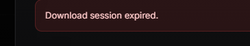
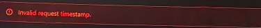
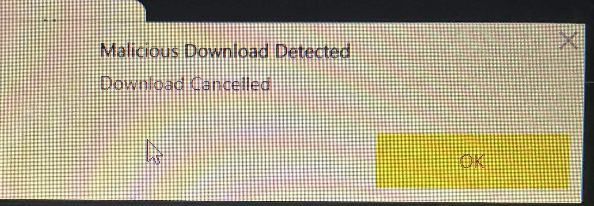
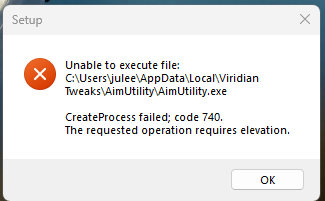

Most issues here are caused by Windows setup, missing runtimes, browser/ISP routing, or security tools on your PC.
Search your error or pick a category below before creating a ticket.
If your browser, Windows Security, or a third-party antivirus flags or deletes the app, check your security software first.
Only use files from the official download page. If you do not know which setting blocked the download or install, ask AI or search your security product's guide before opening a ticket.
If the download page says "Hmmm... can't reach this page" or "took too long to respond" in every browser, your ISP or local network can't reach Cloudflare (where the page is hosted). The site is up — this is local routing.
Flush DNS cache: press Win + R, type cmd, run: ipconfig /flushdns
Change DNS to Cloudflare (fixes ~95% of cases): Win + R → ncpa.cpl → right-click your active connection → Properties → Internet Protocol Version 4 (TCP/IPv4) → Properties → "Use the following DNS server addresses":
Preferred: 1.1.1.1
Alternate: 1.0.0.1
Click OK, open a fresh browser, try the link again.
If still failing — try your phone's mobile hotspot. If it works there, your home ISP is the problem; keep Cloudflare DNS.
Last resort: any free VPN (ProtonVPN, Cloudflare WARP) connected to a US server.
Once the download is done, you can switch DNS back to "Obtain automatically" if your ping got worse. The DNS change only affects website lookups, not gameplay — but reverting it is fine.
Connection
Download page says DNS_PROBE_FINISHED_NXDOMAIN
This means your DNS resolver cannot look up download.viridiantweaks.com — even though it exists and works worldwide. Most often it's a stale cache or slow ISP DNS server.
Press Win + R, type cmd, run: ipconfig /flushdns
Restart your browser fully (close all windows).
Still failing? Change your DNS to 1.1.1.1 and 1.0.0.1 (Cloudflare) — see the steps in the "ERR_CONNECTION_TIMED_OUT" issue above.
Try again after a few minutes — sometimes it's a propagation delay that resolves itself.
License
"Your key got flagged due to suspicious activity"
Your key was automatically flagged by our anti-sharing system. This is not a permanent ban — it just means our automated system saw something unusual and your key is under temporary review.
What happens now:
Our team gets an automatic notification the moment your key is flagged.
Most flagged keys are released within a few hours, once a staff member reviews the activity and confirms it was a false positive (dynamic ISP IP, hardware change, etc.).
If we see real key-sharing behavior in the review, the key gets permanently banned instead of released.
What you should do:
Wait. Try logging in again after a few hours.
If after 3 full days your key is still blocked and you have not heard anything from us, then open a Discord ticket with your key and Discord ID.
VERY IMPORTANT — please do NOT open a ticket before 3 days have passed.
Opening a ticket immediately after a flag will get you timed out / muted in our Discord. We already know about your flagged key the second it happens — duplicate tickets just slow our team down for everyone else. Wait the 3 days first.
Download
"Download session expired" on the download page
Your download session timed out because too much time passed between entering your license key, connecting Discord, and clicking download. It is harmless — you just need to start the flow once more.
Click Connect Discord and finish the Discord login.
Click Download — your session is fresh again and the file will start downloading.
Tip: try not to wait too long between the steps. If you get interrupted (phone, AFK, etc.) just restart the flow — sessions are short on purpose so old links can not be reused by someone else.

Install / Update
Macro updates download, but version stays the same (stuck on old version)
If after an update your version in the bottom-right corner still shows the old number (e.g. 1.0.33), the installer was unable to overwrite the running files. Fixed in 1.0.37+. If you're below 1.0.37, you'll need one manual reinstall to get the fix.
Fully close the Macro (also check system tray near the clock — right-click → Exit).
Open Apps & Features in Windows, find Viridian Macro, click Uninstall.
Download the latest installer from the official download page.
Install — version should now show 1.0.37 or higher.
After this one-time reinstall, every future update will install automatically.
If you keep seeing the same old version after a clean reinstall, an antivirus may be deleting the new files mid-install. Check your antivirus quarantine first.
Install / Update
Tweaks stuck on V1.0.0 even after reinstall
The app finds an old leftover UI folder in your Windows AppData and loads it instead of the freshly installed one. Resetting your PC does not help unless you chose "Remove everything" — "Keep my files" leaves AppData intact.
Make sure Viridian Tweaks is fully closed (also check the system tray).
Press Win + R, type %LOCALAPPDATA%, press Enter.
Find the folder called ViridianTweaks and delete it completely.
Reinstall from the official download page — the latest version will now load.
%LOCALAPPDATA%\ViridianTweaks
That folder is the only place the app stores its data — nowhere else on your system. So a Windows reset only fixes this if you wiped AppData too.
Error code 2
Error code 2 or app files blocked after install
These problems are almost always caused by security software deleting or blocking important files during or after installation.
Replace the username path with your real Windows username if you browse manually. You can open Local AppData by pressing Win + R, typing %localappdata%, and pressing Enter.
Got this error? Your Windows clock is probably out of sync. Try these steps before creating a ticket.
Open CMD as Administrator. Press Win + S, search for CMD, right-click it, then choose Run as administrator.
Try this first:
w32tm /resync /force
If that did not work, run these one by one:
net stop w32time
w32tm /unregister
w32tm /register
net start w32time
w32tm /resync /force
Restart your PC, then launch the app again. Also check Settings -> Time & Language -> Date & Time and enable Set time automatically.

Runtime
"MSVCP140.dll" / "VCRUNTIME140.dll" / any MSVC*.dll missing error
If you get an error mentioning a missing .dll file starting with MSVC, VCRUNTIME, or api-ms-win-crt, you just need to install the Microsoft Visual C++ Runtime. Takes 30 seconds.
Download Visual C++ Redistributable x64 (the button below).
Run vc_redist.x64.exe → click Install.
Restart your PC if Windows asks.
Launch the Viridian app again — the dll error is gone.
If the installer says "already installed" but the dll error still shows, run the installer again and choose Repair. That fixes broken Visual C++ installs that AV cleanups sometimes leave behind.
Runtime
Visual C++ Runtime is missing
This can affect AimUtility and Tweaks. Install the Microsoft Visual C++ Redistributable x64, then restart if prompted.
Go to the official Microsoft runtime download.
Download vc_redist.x64.exe.
Double-click it, click Install, then restart if Windows asks.
Browser / Windows says "Malicious Download Detected" or "Download Cancelled"
This is a known false positive on unsigned Windows software and happens to almost every new indie tool — including ours. The download is safe.
Why this happens: Our installer is not yet code-signed with an expensive Microsoft EV certificate, so browsers and Windows Defender treat any new unsigned executable as suspicious until thousands of users have downloaded it. The file itself is the exact installer we host — and we've been trusted by over 2,000 active community members using it daily.
Quick fix:
In your browser's download bar, click "Keep" / "Keep anyway" / "Download anyway". On Chrome/Edge it may be hidden behind a "..." menu next to the warning.
If Windows SmartScreen blocks the installer when you open it, click "More info" → "Run anyway".
If your antivirus quarantines it, restore the file from quarantine and add the install folder as an exclusion before running it.
If you're not comfortable doing this, that's totally fair — you can also scan the file on VirusTotal first. Most flags you'll see are heuristic / "generic" detections that AV vendors apply to every unsigned installer until enough users vouch for it.

Security tools
Software disappears, files are missing, or the browser blocks the download
This is usually caused by Windows Defender or a third-party antivirus quarantining files during download, install, launch, or after a restart.
Make sure you downloaded only from the official Viridian download page.
Check your browser downloads panel and your antivirus quarantine/history.
If you trust the official download, restore the blocked file or add the install folder as an exclusion.
Reinstall the software after the exclusion is added, because important files may already have been removed.
Do not create a ticket only to say that your antivirus blocked the file. Check your local security tools first.
Security tools
Software disappears after restart
If Windows Defender removes files after installation, add exclusions for the official install folders, then reinstall.
If you use Bitdefender, Kaspersky, Avast, Norton, ESET, or another antivirus, add the same folders through that product's own UI.
Install / Update
App opens but the window is completely white (or black) — no UI loads
You launch AimUtility, Tweaks or Macro and only see a blank white or black window, no buttons, no text. The most common cause: a leftover old UI folder in your Windows AppData is being preferred over the fresh install, or important files were removed by antivirus during installation.
Fully close the app (also check the system tray near the clock — right-click → Exit).
Uninstall the app via Apps & Features.
Press Win + R, type %LOCALAPPDATA%, press Enter.
Find the folder ViridianTweaks (or anything starting with "Viridian") and delete it completely.
Also delete the leftover Program Files folder if it exists.
Turn off antivirus / Windows Defender real-time protection before the next install — many AVs silently quarantine the WebView2 / UI files mid-install, which leaves you with a blank window.
Install WebView2 Evergreen Runtime and Visual C++ x64 (download links below).
Reinstall the app from the official download page.
Right-click the app shortcut → Run as administrator.
If your antivirus was on during install, files needed for the UI may already be quarantined. Always disable AV before reinstalling, then add the install folder as an exclusion afterwards.
Windows refused to start the app because it needs administrator rights. This is harmless — just launch the installer (or the app) as administrator.
Close the error dialog (click OK).
Right-click the installer .exe (or the Viridian app shortcut) → Run as administrator.
If Windows asks for permission via UAC, click Yes.
If you started it from the Start Menu: press Win, type the app name, then right-click the result → Run as administrator.
To make the app always launch as admin (so you don't have to remember every time): right-click the app shortcut → Properties → Compatibility tab → check Run this program as an administrator → OK.

License
Did not receive your key?
Please check your spam folder and all email inbox tabs before creating a ticket.
?
Still stuck after trying the matching fix?
Create a ticket with screenshots, your Windows version, your antivirus/security product, and the exact step where it fails.